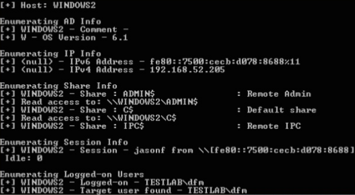

Rob Fuller (@mubix's) netview.exe project
Presented at Derbycon 2012
Enumerate systems using WinAPI calls
Finds all machines on the network, enumerates shares, sessions, logged in users for each host
Check share access, highligh high value users, use a delay/jitter
No admin privs needed!
https://github.com/mubix/netview
